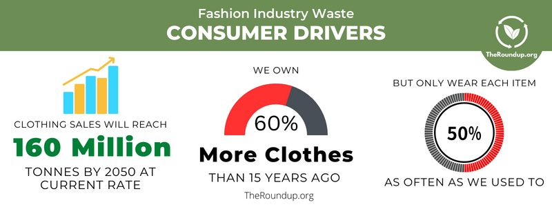

This graph exhibits the amount of textile waste managed in various ways (recycles, composted, combusted, or landfilled) as a function of Tons of Waste during the period from 1960 to 2015.
This picture shows the statistics for the effects of Textile Waste such as water pollution, CO2 emissions, and garbage production.
This bar graph illuminates the position of the Textile Industry in among other industries in terms of total waste production.
This graph shows the amount of water pollution cause by Textile Waste in different G20 nations.
This graph throws light on the positive trend of amount of Textile Wastes recycled every year during the period 2015-2018.
This graph shows the amount of Textile Wastes managed in different ways (recycled, combusted, or landfilled) in U.S. during the period 1960-2017.
This graph illustrates the amount of Textiles Wates by type during the period 1980-1988.

This graph portrays how the amount of clothes bought and used every year is increasing, yet their indivisual usage has declined.
This picture enlightens us with the difference between the consumption of resources used in the productio of virgin and recycled textiles.


{kind=link}
{kind=link}